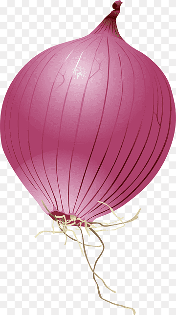
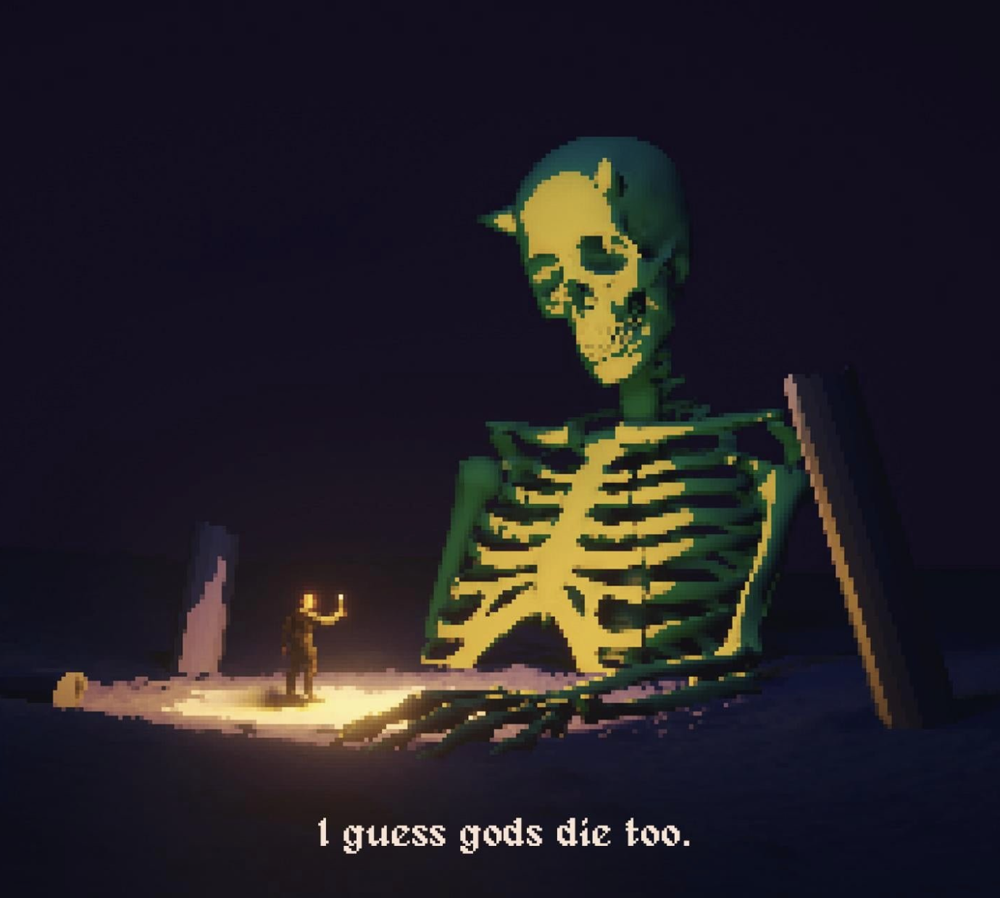

the difference is in how you arrive.
>
tap anywhere to type
initializing onionOS...
onionOS
🔒 logout
⏻ shut down
select user
👁
observer
public access

orion
restricted
login
incorrect password.
press to power on
🖥️
terminal
📁
file manager
📝
text edit
🌐
browser
🧮
calculator
📅
calendar
🕐
clock
🌤
weather
📊
activity
🗺️
maps
browser
◀ back
calculator
calendar
clock
weather
activity monitor
maps
terminal

file manager
◀ back
text editor